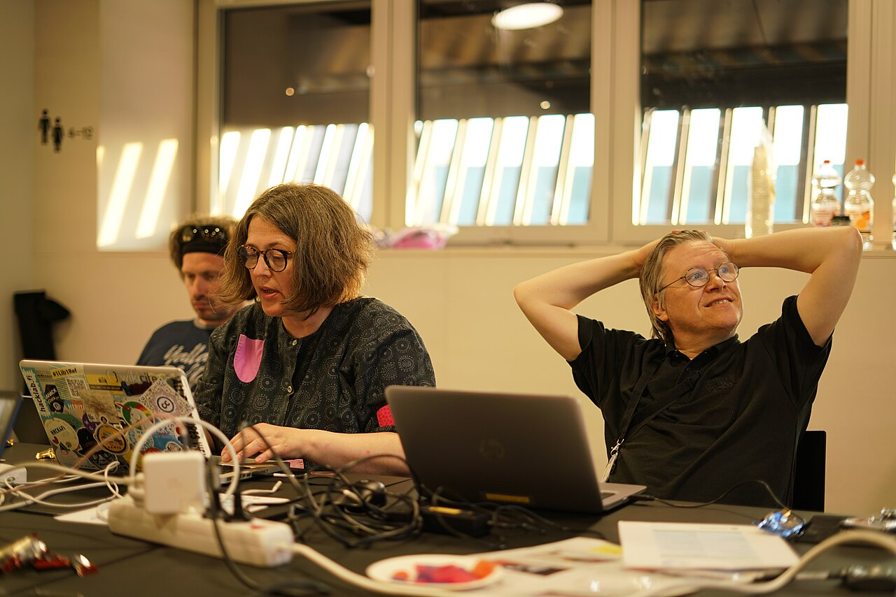
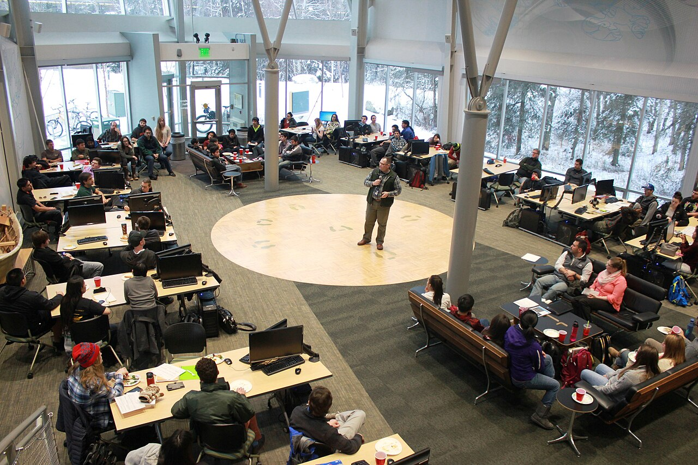
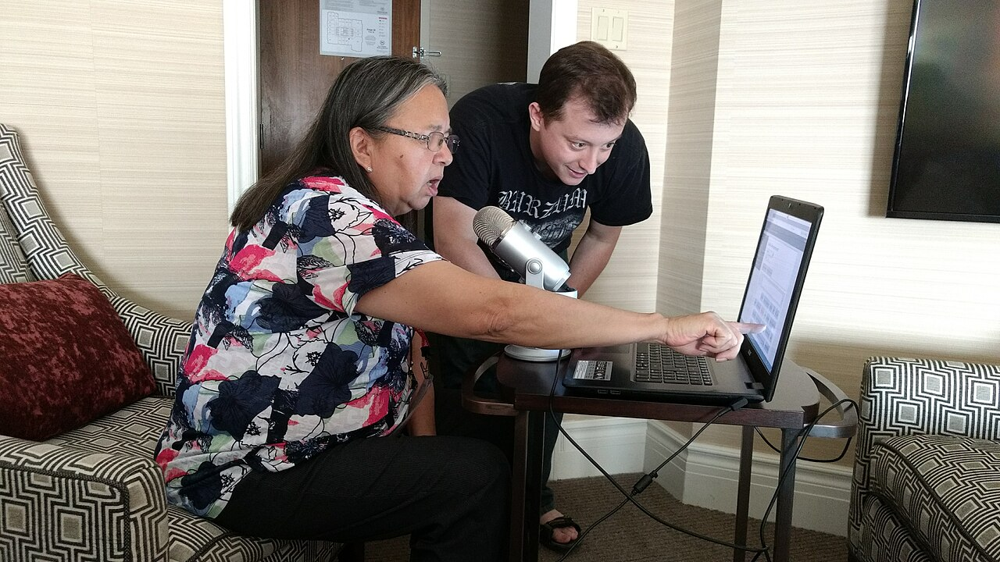

Nunavut
Gjoa Haven community centre, Nunavut
Our mission
Our mission is to make suicide-prevention support more accessible across languages and communities.

Community perspectives
Independent photographs of community activities in eight regions.
Gjoa Haven community centre, Nunavut

Deadly Sista Girls team, Western Australia

Māori-content workshop, Te Papa, Wellington

Sámi-language workshop, Oodi library, Helsinki

ANSEP students with BSEE staff, Anchorage

Atikamekw language recording, Wikimania, Montreal
Kuaray Rete school, Karanda’ty, Brazil

Weaving workshop, Guatemala
Explore the community photographs.
Photographs document independent community activities. Map markers show regional contexts; captions identify photo locations. Locations & credits ↗
Suicide prevention
Some Indigenous populations face disproportionately high suicide rates. Prevention should respect language, culture and community leadership, alongside timely access to appropriate, culturally safe mental-health support.
Evidence includes Canada’s 2011–2016 cohort and Australia’s 2025–2035 prevention strategy. Rates vary between communities and across different timeframes; these sources establish no global ranking. The photographs document independent activities. They do not establish anyone’s health status, use of services or participation in Neorons programmes.
Statistics Canada · Indigenous suicide mortality, 2011–2016 ↗Australia · National Indigenous suicide prevention strategy, 2025–2035 ↗We advocate for the implementation of language, cultural and self-determination protections.
Different jurisdictions and legal duties apply. UNDRIP is a declaration; ILO 169 binds ratifying states.
Multilingual conversational AI provides a way to interact through speech.
Multilingual conversational AISpeech recognition converts the caller’s spoken words into text.
Audio to textA language model uses the transcript and earlier conversation to generate a text response.
Conversation contextSpeech synthesis converts the generated text into audio for the caller.
Text to audioService design
Voice interfaces let people interact through speech. Multilingual design also requires attention to accents, language changes and recognition errors.
An illustrative walkthrough of voice AI, with a fictional conversation shown as text. The interface, models, and language coverage shown here do not specify Neorons’ deployed implementation.
Speech recognition maps audio to text. A language model uses that text and preceding conversation to generate a response. Speech synthesis then produces spoken audio.
Accents, background noise, and language changes can affect recognition. Language models can be wrong; fluency alone does not establish reliability or clinical suitability.
AI conversations do not replace professional care or emergency services.
Participation